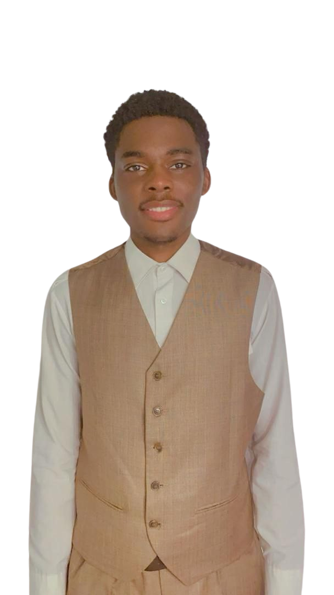

Présentation personnelle.
Salut ! Je suis Fonkou Mukeme Kevin Franklin, étudiant en Bachelor 3 Développement Informatique, passionné par la technologie et avide d'approfondir mes compétences pratiques dans ce domaine fascinant. Mon objectif est clair : mettre en pratique les connaissances acquises au sein d'une entreprise innovante. J'ai soif de contribuer de manière significative à des projets concrets et de continuer à développer mon expertise dans le monde de l'informatique.
Présentation chinoise.
Si j'étais un animal, je serais un caméléon. Comme lui, je m'adapte aux environnements
changeants, maîtrisant
différentes facettes du développement informatique, tout en restant flexible pour répondre aux besoins variés
des projets et des entreprise.
Si j'étais un objet, je serais un couteau suisse. Multifonctionnel et polyvalent, j'explore divers domaines du
développement : du développement web au développement mobile, avec une variété d'outils et de langages tels que
Angular, React Native, Python, et bien d'autres.
Si j'étais un outil, je serais une boîte à outils. Polyvalente et complète, j'explore divers domaines du
développement : du développement web au développement mobile, avec une variété d'outils et de langages tels que
React, React Native, Python, et bien d'autres.
Lettre à mon moi du futur -> 10ans
Voici ta lettre pour ton toi de 10 ans :) J'espère qu'elle te plaira.
Cher Futur Kevin,
J'espère que cette lettre te trouve entouré de réussites éclatantes et de nouveaux horizons captivants. Il y a
dix ans, rempli d'excitation et de curiosité, nous étions sur le point d'embrasser l'avenir avec détermination.
Je suis fier du chemin parcouru depuis lors. Tu as transformé tes aspirations en réalisations concrètes,
explorant les recoins fascinants du développement informatique avec une passion inaltérable. Tu t'es engagé à
élargir tes compétences, maîtriser de nouvelles technologies et apporter une contribution significative à des
projets révolutionnaires.
J'imagine que tu as dirigé des projets visionnaires et marqué l'industrie du développement informatique.
Peut-être as-tu créé une équipe inspirée par ta vision, repoussant les limites de la technologie. N'oublie
jamais d'alimenter ta soif de connaissances et d'innovation, tout en conservant ton éthique de travail
inébranlable.
Je te souhaite un succès retentissant dans toutes tes entreprises futures. Souviens-toi toujours de la passion
qui anime ton être et de l'impact extraordinaire que tu souhaites avoir sur le monde.
Avec admiration et confiance en tes capacités,
Ton moi d'il y a dix ans